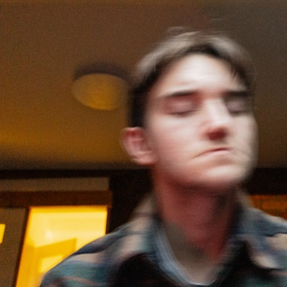

 Hello, to krótka stronka poświęcona mnie (hehe), taki zbiór informacji o mnie jakby ktoś był ciekaw yeah. Jeśli chciałbyś stworzyć coś podobnego, kod tej stronki jest public domain. Uzywajcie ile chcecie!
🎥 Ulubione filmy/seriale:
- Forrest Gump
- Madagaskar
- Big Hero 6
- Perfect Days
- Piraci z karaibów (1-4)
- Pingwiny z Madagaskaru (serial Nickelodeon)
🎵 Muzyka:
- C418
- Aswrek
- Jack Stauber
- Republika
- Obywatel G.C.
- Robert Abazur
- Lin-Manuel Miranda
- Tom Rosenthal
- Tatsuro Yamashita
- Myslovitz
- Paktofonika
- Tyler, The Creator
- Molchat Doma
- TV Girl
- The Smiths
Wilbur SootTaco Hemigway
☎️ Ulubione gry:
- Minecraft
- Danganronpa
- Psychonauts
- Night in the woods
- Pizza Tower
✨
- Nie istnieje coś takiego jak system "karmy", księga hioba temu zaprzecza.
🎨 Inspiracje:
- Zuzu
- Yagi
- Artygona
- Inka
- RyBcia
- yodud
- elliotisacoolguy
- arhn.eu (DarkArchon)
- Kacpir
- Dry Creek Wrangler School
- Graf
🏃♀️ Aktywności:
- Bieganie (ok. 10-15km)
- Górskie wycieczki (ok. 15-25km)
- Podróże